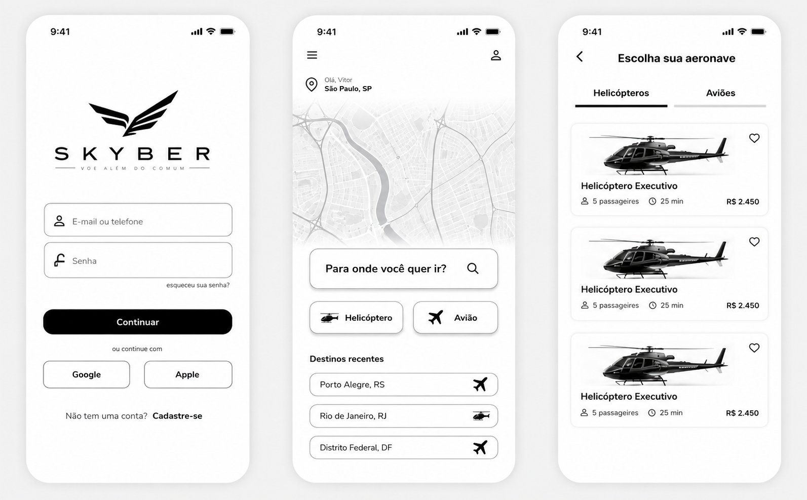
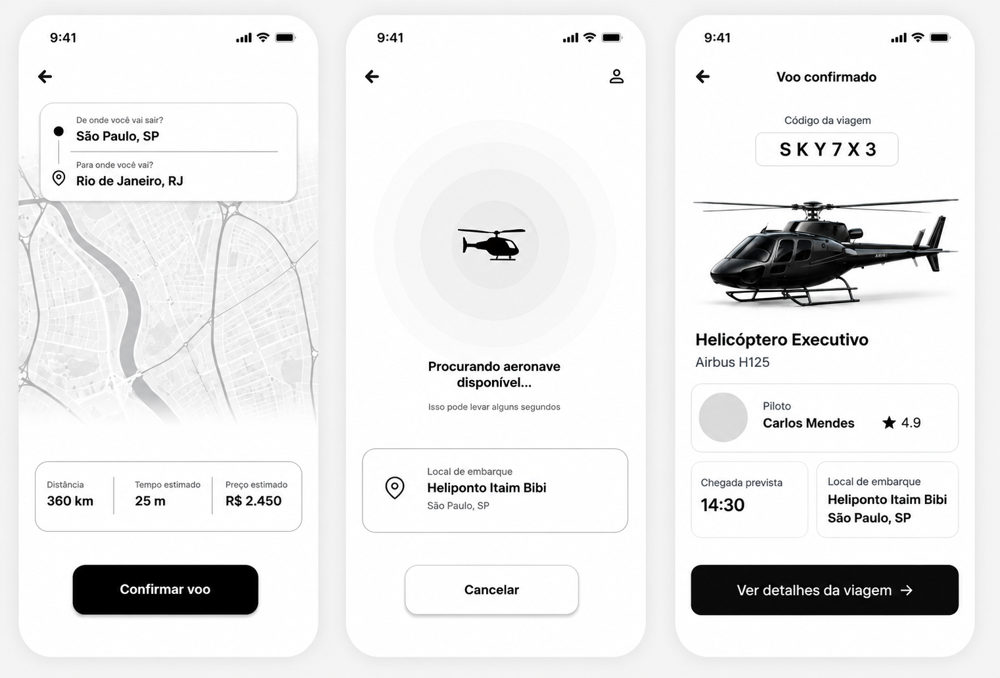

Reserva rápida
Escolha o destino, selecione a aeronave e confirme o voo. Tudo isso em uma tela simples e direta.
Com o app Skyber você reserva um helicóptero ou avião executivo em menos de 2 minutos e voa além do comum.
Quero baixar o app
Escolha o destino, selecione a aeronave e confirme o voo. Tudo isso em uma tela simples e direta.
Você escolhe o tipo de aeronave ideal para a sua viagem, de acordo com a distância e o número de passageiros.
Veja no mapa a aeronave chegando até o seu heliponto e acompanhe todos os detalhes da viagem.
Todos os pilotos possuem nota e avaliação de outros passageiros, garantindo mais segurança e confiança.
Digite de onde você está saindo e para onde quer ir.
Selecione entre helicóptero ou avião executivo.
Veja o preço, confirme e pronto, sua viagem está reservada.

Até 5 passageiros, ideal para trajetos rápidos entre capitais e regiões metropolitanas, com todo o conforto que você merece.
Disponível para Android e iOS. Cadastre-se em segundos e faça sua primeira reserva hoje mesmo.
Baixar aplicativo